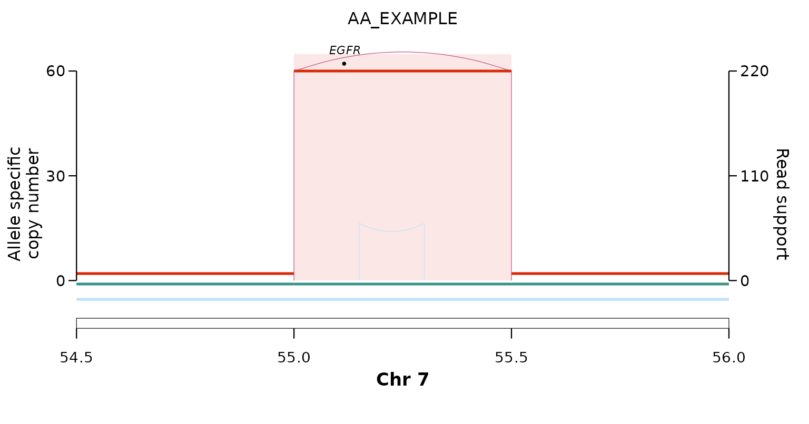

call_simple_excision() (its
vignette) works from PURPLE/GRIDSS copy-number and
structural-variant calls.
call_episomal_from_ampliconsuite() applies the same
episome model directly to AmpliconSuite output — AmpliconArchitect
(AA) plus AmpliconClassifier
(AC) — so ecDNA calls from community resources such as AmpliconRepository can be
classified as episomal (simple-excision circle) or not, unified with the
PURPLE-native engine.
It is a self-contained module (it does not touch
call_simple_excision()), built around three exported
functions:
| function | role |
|---|---|
read_ampliconsuite() |
parse an AA *_graph.txt into copy-number segments + SV
junctions |
aa_cycle_intervals() |
derive the ecDNA extent from an AA *_cycles.txt when
there is no AC BED |
call_episomal_from_ampliconsuite() |
classify one AC ecDNA feature as episomal / bridged / complex |
Inputs
Two files per amplicon, both standard AmpliconSuite output:
- an AmpliconArchitect
*_graph.txt—sequenceedges are copy-number segments (column 4 =PredictedCopyCount),discordantedges are SV junctions (column 3 = junction copy number, column 4 =NumberOfReadPairs, i.e. the read-pair support the caller uses); - the AmpliconClassifier ecDNA interval BED
*_amplicon<N>_ecDNA_<k>_intervals.bed, which defines the amplicon extent — AA/AC’s own call, so no copy-number threshold is re-applied here.
A worked example
There is no bundled AmpliconSuite dataset, so we synthesise a tiny one: a textbook episomal EGFR ecDNA on chr7, written in the exact AA/AC on-disk formats into temporary files.
# --- a minimal AmpliconArchitect *_graph.txt ------------------------------
graph <- tempfile(fileext = "_graph.txt")
writeLines(c(
"SequenceEdge: StartPosition, EndPosition, PredictedCopyCount, AverageCoverage, Size, NumberReadsMapped",
"sequence\tchr7:54500000-\tchr7:54999999+\t2\t100\t499999\t100", # diploid flank
"sequence\tchr7:55000000-\tchr7:55500000+\t60\t900\t500000\t9000", # EGFR amplicon
"sequence\tchr7:55500001-\tchr7:56000000+\t2\t100\t499999\t100", # diploid flank
"BreakpointEdge: StartPosition->EndPosition, PredictedCopyCount, NumberOfReadPairs, HomologySizeIfAvailable, Homology/InsertionSequence",
"discordant\tchr7:55000000-->chr7:55500000+\t55\t220\tNone\tNone", # boundary DUP
"discordant\tchr7:55150000+->chr7:55300000-\t20\t60\tNone\tNone"), # internal DEL
graph)
# --- the AmpliconClassifier ecDNA interval BED (exclusive end) -------------
bed <- tempfile(fileext = "_ecDNA_1_intervals.bed")
writeLines("chr7\t55000000\t55500001", bed)read_ampliconsuite() parses the graph. Note that AA
writes each junction in an arbitrary orientation, so the SV class is
assigned after sorting the two breakends by coordinate
(lo/hi): a lo-/hi+
pair is a head-to-tail duplication — the circulariser.
gr <- read_ampliconsuite(graph)
gr$junctions[, c("cA", "pA", "cB", "pB", "svclass", "jcn", "pe_support")]
#> cA pA cB pB svclass jcn pe_support
#> <char> <num> <char> <num> <char> <num> <num>
#> 1: chr7 55000000 chr7 55500000 DUP 55 220
#> 2: chr7 55150000 chr7 55300000 DEL 20 60Classifying the amplicon:
res <- call_episomal_from_ampliconsuite(graph_file = graph, intervals = bed)
t(res)
#> [,1]
#> episomal "TRUE"
#> status "episomal"
#> chimeric "FALSE"
#> n_chr "1"
#> bd_chr "chr7"
#> bd_lo "5.5e+07"
#> bd_hi "55500000"
#> bd_pe_support "220"
#> bd_jcn "55"
#> bd_homlen NA
#> bd_occupancy "1"
#> bridge_pe_support NA
#> bridge_partner NA
#> n_junctions "2"The amplicon is episomal = TRUE
(status = "episomal"): a boundary DUP brackets the ecDNA
extent, and the extent is fully amplified
(bd_occupancy = 1).
The episome model
An amplicon is episomal when a boundary DUP exists:
- Extent comes from AmpliconSuite itself (the AC ecDNA interval BED, or the dominant AA cycle) — no copy-number cutoff is applied here.
-
Boundary DUP = an intra-chromosomal duplication
whose two ends bracket the ecDNA’s outer boundary on its
chromosome (
lo ≤ extent startandhi ≥ extent end). - Episomal if ≥ 1 boundary DUP exists. The boundary DUP reported is the one with the highest read-pair support among the spanning DUPs — a selector, not a gate: a higher-support DEL or INV elsewhere in the amplicon does not veto the call.
- Chimeric episomal — a multi-chromosome ecDNA where every chromosome is bracketed by its own boundary DUP and at least one translocation joins them (two episomes fused into one circle).
- Internal structure is ignored — an episome may be heavily rearranged internally (chromothripsis within a micronucleus); only the circularising boundary matters, never the junction count.
Two guards reject amplicons that pass the geometry but are not self-contained circles:
-
Occupancy guard (
min_occupancy, default0.05) — the boundary-DUP bracketed span must be > 5 % covered by the ecDNA intervals. A lone DUP spanning a largely diploid region (e.g. across a whole chromosome arm) is not a circle. The default was calibrated on a PCAWG-vs-PURPLE concordance sweep. -
Bridged / ambiguous downgrade
(
bridge_gap, default1 Mb) — if the amplicon’s highest read-pair-support junction reaches out to another amplified region on the same chromosome beyond the extent, the dominant rearrangement co-mobilises sequence outside the circle, so the call is downgraded tostatus = "bridged". (Cross-chromosome translocations are the chimeric signature and are not downgraded.)
Every reported field (bd_pe_support,
bd_occupancy, bridge_partner, …) is documented
in ?call_episomal_from_ampliconsuite.
Visualising the call
read_ampliconsuite() output converts directly into
plot_sv_linear() inputs, so the same episome can be drawn —
the sharp copy-number step over EGFR, bounded by the duplication
junction:
cnv_data <- with(gr$segments, data.frame(
sample = "AA_EXAMPLE", seqnames = chr, start = start, end = end,
copyNumber = cn, ploidy = 2,
majorAlleleCopyNumber = cn, minorAlleleCopyNumber = 0))
sv_data <- with(gr$junctions, data.frame(
sample = "AA_EXAMPLE",
chrom1 = cA, start1 = pA, strand1 = sA,
chrom2 = cB, start2 = pB, strand2 = sB,
svclass = svclass, VF = pe_support, JCN = jcn))
plot_sv_linear(
sample = "AA_EXAMPLE",
cnv_data = cnv_data,
sv_data = sv_data,
chromosome = "chr7",
chromosome_range = matrix(c(54.5e6, 56e6), nrow = 1)
)
Bare AA runs (no AmpliconClassifier)
For an AA run without AC, take the extent from the reconstructed
cycle: aa_cycle_intervals() reads the dominant
(highest-copy) cycle’s segments from a *_cycles.txt
(dropping the AA source vertex, segment 0). You can pass
the *_cycles.txt path straight to intervals —
the caller detects it:
cycles <- tempfile(fileext = "_cycles.txt")
writeLines(c(
"Segment\t1\tchr7\t55000000\t55500000",
"Cycle=1;Copy_count=100;Segments=0+,1+"), cycles)
call_episomal_from_ampliconsuite(graph_file = graph, intervals = cycles)$status
#> [1] "episomal"Using your own data
Point the two arguments at the matching files from an AmpliconSuite run or an AmpliconRepository download:
call_episomal_from_ampliconsuite(
graph_file = "SAMPLE_amplicon1_graph.txt",
intervals = "SAMPLE_amplicon1_ecDNA_1_intervals.bed")Chromosome names may carry a chr prefix or not, as long
as the graph and the BED agree. One AC amplicon can yield several ecDNA
features (ecDNA_1, ecDNA_2, …); classify each
by passing its own interval BED with the shared
*_amplicon<N>_graph.txt. Breakpoint homology is often
absent from AA graphs (the field is written None), so for a
homology signature use the PURPLE-native
call_simple_excision() path instead.